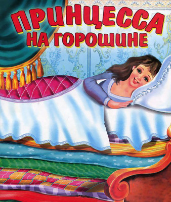

Принцесса на горошине
Г. Х. Андерсон
Жил-был принц, он хотел взять себе в жены принцессу, да только настоящую принцессу. Вот он и объехал весь свет, искал такую, да повсюду было что-то не то: принцесс было полно, а вот настоящие ли они, этого он никак не мог распознать до конца, всегда с ними было что-то не в порядке. Вот и воротился он домой и очень горевал: уж так ему хотелось настоящую принцессу.
Как-то к вечеру разыгралась страшная буря; сверкала молния, гремел гром, дождь лил как из ведра, ужас что такое! И вдруг в городские ворота постучали, и старый король пошел отворять.
У ворот стояла принцесса. Боже мой, на кого она была похожа от дождя и непогоды! Вода стекала с ее волос и платья, стекала прямо в носки башмаков и вытекала из пяток, а она говорила, что она настоящая принцесса.
«Ну, это мы разузнаем!» — подумала старая королева, но ничего не сказала, а пошла в опочивальню, сняла с кровати все тюфяки и подушки и положила на доски горошину, а потом взяла двадцать тюфяков и положила их на горошину, а на тюфяки еще двадцать перин из гагачьего пуха.
На этой постели и уложили на ночь принцессу.
Утром ее спросили, как ей спалось.
— Ах, ужасно плохо! — отвечала принцесса. — Я всю ночь не сомкнула глаз. Бог знает, что там у меня было в постели! Я лежала на чем-то твердом, и теперь у меня все тело в синяках! Это просто ужас что такое!
Тут все поняли, что перед ними настоящая принцесса. Еще бы, она почувствовала горошину через двадцать тюфяков и двадцать перин из гагачьего пуха! Такой нежной может быть только настоящая принцесса.
Принц взял ее в жены, ведь теперь-то он знал, что берет за себя настоящую принцессу, а горошина попала в кунсткамеру, где ее можно видеть и поныне, если только никто ее не стащил.
Знайте, что это правдивая история!